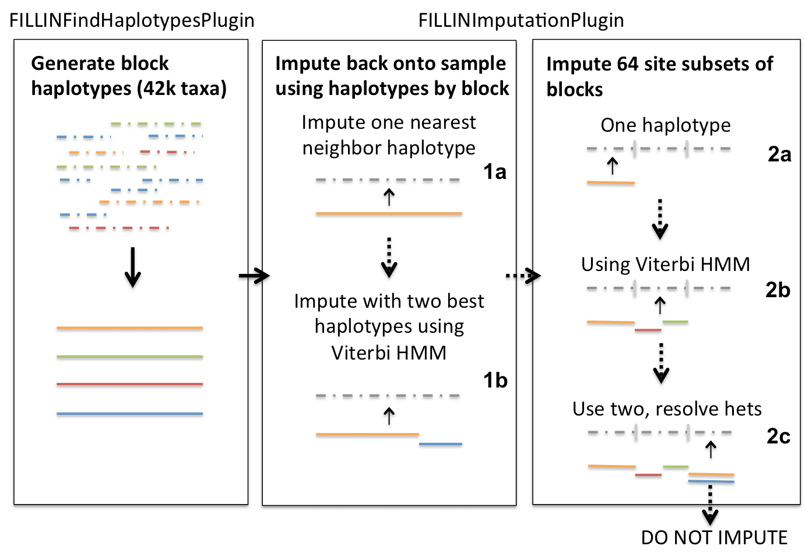

FILLIN¶
TASSEL5 contains two methods for imputing missing genotype information, one is a generalized approach suitable for all types of populations but optimized for those with higher inbreeding coefficients (FILLIN) and the other is specifically optimized for finding recombination break points in full-sib families (FSFHap). More information on these two methods can be found at:
Swarts et al. (2014) FSFHap (Full-Sib Family Haplotype Imputation) and FILLIN (Fast, Inbred Line Library ImputatioN) optimize genotypic imputation for low-coverage, next-generation sequence data in crop plants, Plant Genome doi:10.3835/plantgenome2014.05.0023.
FILLIN (Fast, Inbred Line Library ImputatioN): The generalized approach
FILLIN imputes missing genotypes in two steps, 1) haplotype generation (FILLINFindHaplotypesPlugin) and 2) imputation of the resulting haplotypes back onto the target samples (FILLINImputationPlugin).
Haplotypes are generated by collapsing low coverage but inbred segments that share identity by state to an optionally user-supplied threshold value by site window (default: 8k); this is performed by the first plugin, FILLINFindHaplotypesPlugin. Because short IBD segments may be replicated widely within a species, even between diverse individuals, we recommend supplying all the information available within a species for this step.
The second plugin, FILLINImputationPlugin, uses these haplotypes to impute missing genotypes in target individuals. It does so in multiple steps, first looking for haplotypes that match the minor alleles to a threshold within the whole site window (1a in schematic below) and, if this fails, looks for two haplotypes to explain the site window and, assuming this represents a recombination break point between two inbred haplotypes, uses a Viterbi HMM algorithm to model the recombination breakpoints (2a). If two haplotypes cannot be found to explain the whole site window, the algorithm next searches for haplotypes to explain a smaller focus window within the site window centered on 64 sites at a time and searching to the right and left until enough informative minor alleles are found. It does this by first looking for one haplotype to a threshold (2a), then two modeling a recombination break between inbred segments (2b), then finally, to a higher threshold, looks for two haplotypes and models the 64 focus site window as heterozygous, combining the two haplotypes together. The thresholds for 2a-c are also set differently based on whether the whole sequence of the target taxon is above or below a user supplied heterozygosity threshold. For taxon considered outbred (above the threshold), 2b the Viterbi option is never used because it is more likely in an outbred taxon that if two haplotypes explain a segment it is heterozygous for those two haplotypes. If the algorithm cannot find haplotypes to satisfy any of these threshold requirements, the segment will not be imputed. The thresholds for the focus block imputation are set based on the mxInbErr and mxHybErr values entered (or defaults):
| . | Below mxHet (inbred) | Above mxHet (outbred) |
|---|---|---|
| 2a | 3/10*mxInbErr | 1/10*mxInbErr |
| 2b | ⅓*mxHybErr | 0 |
| 2c | mxInbErr | mxInbErr |

Running FILLIN: FILLIN consists of two TASSEL plugins, FILLINFindHaplotypesPlugin and FILLINImputationPlugin, which are called sequentially. If you would like to mask your data and calculate accuracy, use the -accuracy flag for FILLINImputationPlugin. If imputing maize, a donor file of haplotypes from 40k+ taxa can be found on the Panzea website (http://www.panzea.org/lit/data_sets.html). FILLIN can be run either within the TASSEL GUI or through the command line. The options are the same for both.
A typical command sequence for running FILLIN through the command line is as follows (replace items in <> with actual parameter values):
run_pipeline.pl -FILLINFindHaplotypesPlugin -hmp
To run FILLIN from the GUI go to Impute->FILLINFindHaplotypesPlugin or FILLINImputationPlugin
Options for FILLINFindHaplotypesPlugin:
-hmp
Options for FILLINImputationPlugin:
-hmp
Options for calculating accuracy
-accuracy